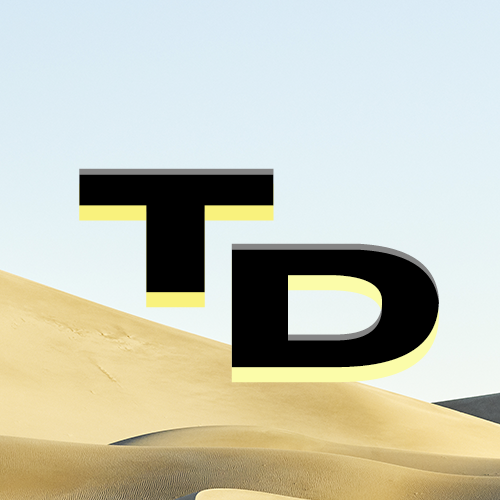

Добро пожаловать на сайт
TheSite
Danik
Майнкрафт
Поддержать
Контакты
Главная
Проекты
DanТrecker
TheOS 11 V4 24H2 Pro
Личная сборка от TheDanik
TheOS 10 V4 22H2 Pro
Личная сборка от TheDanik
Программы для Кастомизации
Программы которые использует TheDanik